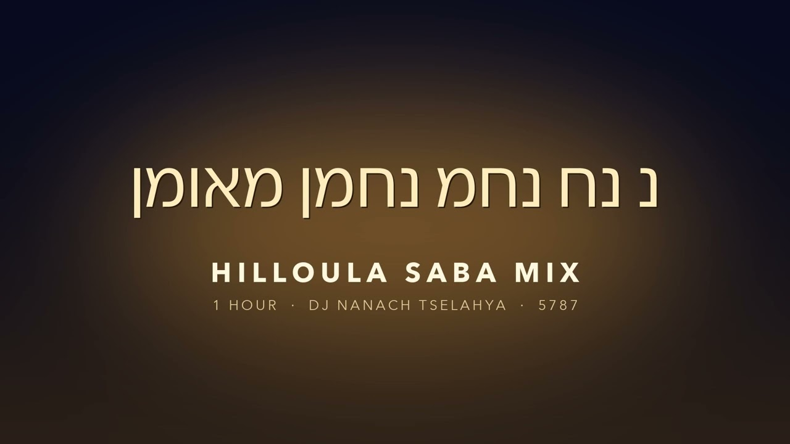
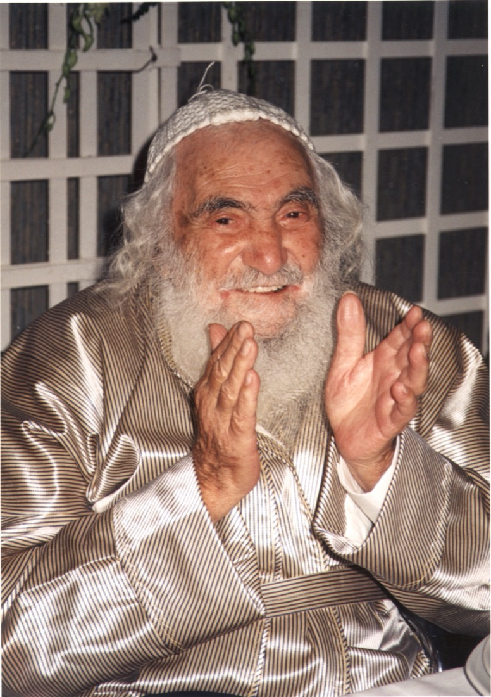

Saba Music
סבא מיוזיקSaba Music
נ נח נחמ נחמן מאומן
Na Nach Nachma Nachman Meuman
המיקסים של DJ NaNaH Tselahya — מוזיקה של שמחה לכבוד סבא, רבי ישראל דב אודסר.
Les mix de DJ NaNaH Tselahya — de la musique de joie en l'honneur du Saba, Rabbi Israël Dov Odesser.

המיקסיםLes mix
Mix 1 · Hilloula · Montée douce
בקרובBientôt
Reggae
Psytrance
Techno
House
Mizrahi
Drill / Rap
Niggoun / Rock
מִצְוָה גְּדוֹלָה לִהְיוֹת בְּשִׂמְחָה תָּמִיד
ליקוטי מוהר"ן תנינא, סימן כד